Información teórica de los temas que rigen cada práctica: Bioseparaciones Mecánicas, Fluido-Fluido y Sólido-Fluido
No disponible, página en construcción, para bajar el estrés admire estos gatitos:
